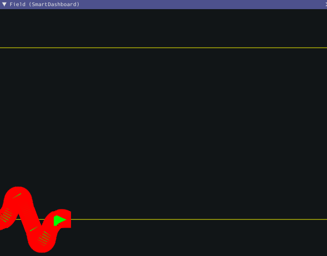
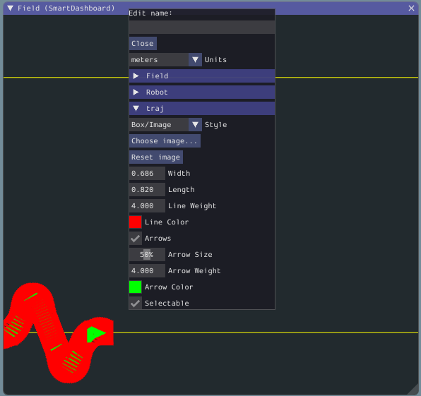
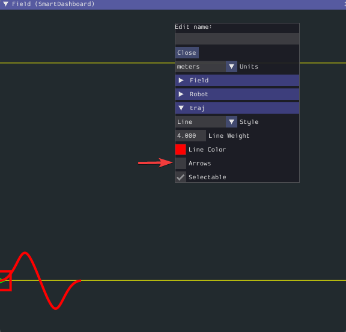

The Field2d Widget
Glass supports displaying your robot’s position on the field using the Field2d widget. An instance of the Field2d class should be created, sent over NetworkTables, and updated periodically with the latest robot pose in your robot code.
Sending Robot Pose from User Code
To send your robot’s position (usually obtained by odometry or a pose estimator), a Field2d instance must be created in robot code and sent over NetworkTables. The instance must then be updated periodically with the latest robot pose.
private final Field2d m_field = new Field2d();
public Drivetrain() {
...
SmartDashboard.putData("Field", m_field);
}
...
public void periodic() {
...
m_field.setRobotPose(m_odometry.getPoseMeters());
}
#include <frc/smartdashboard/Field2d.h>
#include <frc/smartdashboard/SmartDashboard.h>
frc::Field2d m_field;
Drivetrain() {
...
frc::SmartDashboard::PutData("Field", &m_field);
}
...
void Periodic() {
...
m_field.SetRobotPose(m_odometry.GetPose());
}
Note
The Field2d instance can also be sent using a lower-level NetworkTables API or using the Shuffleboard API. In this case, the SmartDashboard API was used, meaning that the Field2d widget will appear under the SmartDashboard table name.
Sending Trajectories to Field2d
Visualizing your trajectory is a great debugging step for verifying that your trajectories are created as intended. Trajectories can be easily visualized in Field2d using the setTrajectory()/SetTrajectory() functions.
44 public void robotInit() {
45 // Create the trajectory to follow in autonomous. It is best to initialize
46 // trajectories here to avoid wasting time in autonomous.
47 m_trajectory =
48 TrajectoryGenerator.generateTrajectory(
49 new Pose2d(0, 0, Rotation2d.fromDegrees(0)),
50 List.of(new Translation2d(1, 1), new Translation2d(2, -1)),
51 new Pose2d(3, 0, Rotation2d.fromDegrees(0)),
52 new TrajectoryConfig(Units.feetToMeters(3.0), Units.feetToMeters(3.0)));
53
54 // Create and push Field2d to SmartDashboard.
55 m_field = new Field2d();
56 SmartDashboard.putData(m_field);
57
58 // Push the trajectory to Field2d.
59 m_field.getObject("traj").setTrajectory(m_trajectory);
60 }
18 void AutonomousInit() override {
19 // Start the timer.
20 m_timer.Start();
21
22 // Send Field2d to SmartDashboard.
23 frc::SmartDashboard::PutData(&m_field);
24
25 // Reset the drivetrain's odometry to the starting pose of the trajectory.
26 m_drive.ResetOdometry(m_trajectory.InitialPose());
27
28 // Send our generated trajectory to Field2d.
29 m_field.GetObject("traj")->SetTrajectory(m_trajectory);
30 }
Viewing Trajectories with Glass
The sent trajectory can be viewed with Glass through the dropdown NetworkTables -> SmartDashboard -> Field2d.
Note
The above example which uses the RamseteController (Java)/RamseteController (C++) will not show the sent trajectory until autonomous is enabled at least once.
Viewing the Robot Pose in Glass
After sending the Field2d instance over NetworkTables, the Field2d widget can be added to Glass by selecting NetworkTables in the menu bar, choosing the table name that the instance was sent over, and then clicking on the Field button.
Once the widget appears, you can resize and place it on the Glass workspace as you desire. Right-clicking the top of the widget will allow you to customize the name of the widget, select a custom field image, select a custom robot image, and choose the dimensions of the field and robot.
When selecting Choose image… you can choose to either select an image file or a PathWeaver JSON file as long as the image file is in the same directory. Choosing the JSON file will automatically import the correct location of the field in the image and the correct size of the field.
Note
You can retrieve the latest field image and JSON files from here. This is the same image and JSON that are used when generating paths using PathWeaver.
Modifying Pose Style
Poses can be customized in a plethora of ways by right clicking on the Field2d menu bar. Examples of customization are: line width, line weight, style, arrow width, arrow weight, color, etc.
One usage of customizing the pose style is converting the previously shown traj pose object to a line, rather than a list of poses. Click on the Style dropdown box and select Line. You should notice an immediate change in how the trajectory looks.
Now, uncheck the Arrows checkbox. This will cause our trajectory to look like a nice and fluid line!
